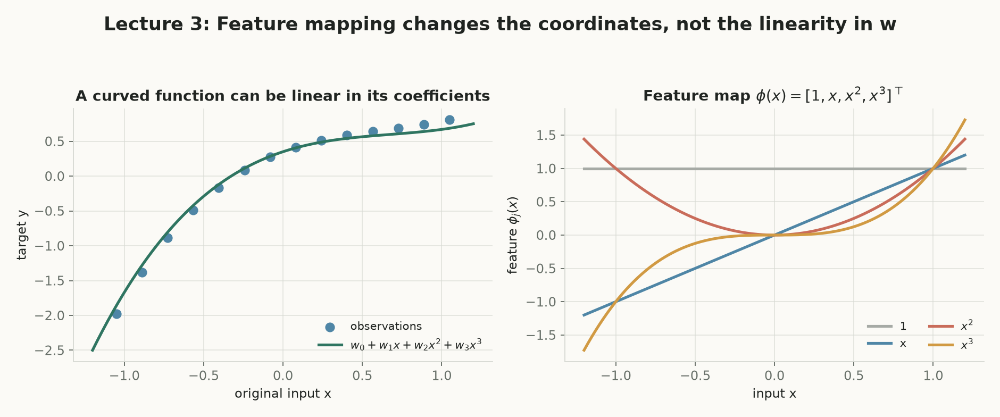
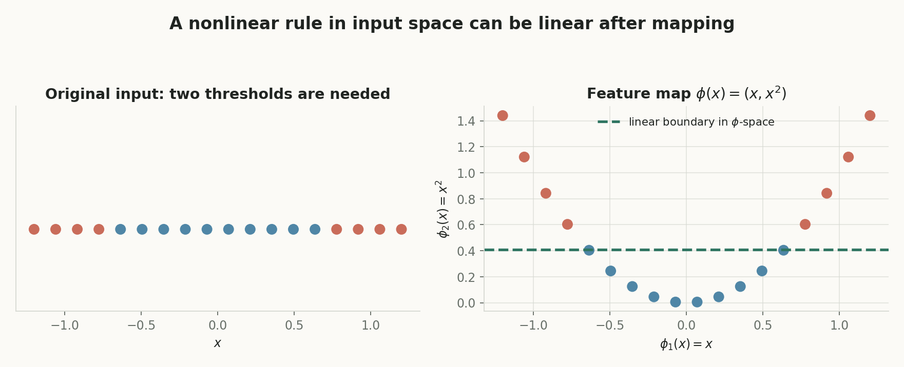
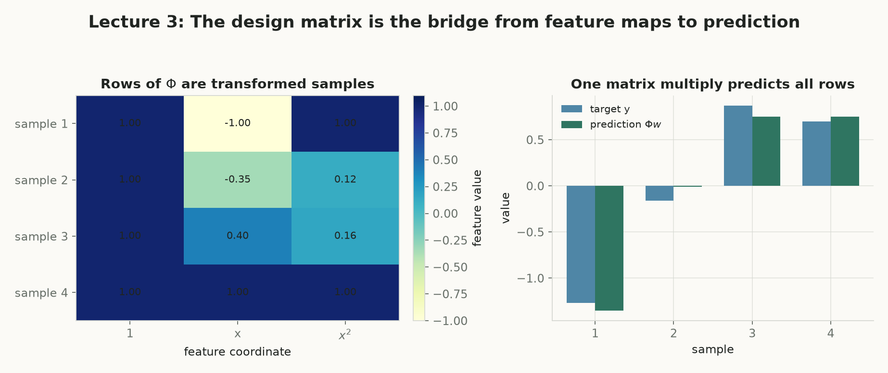
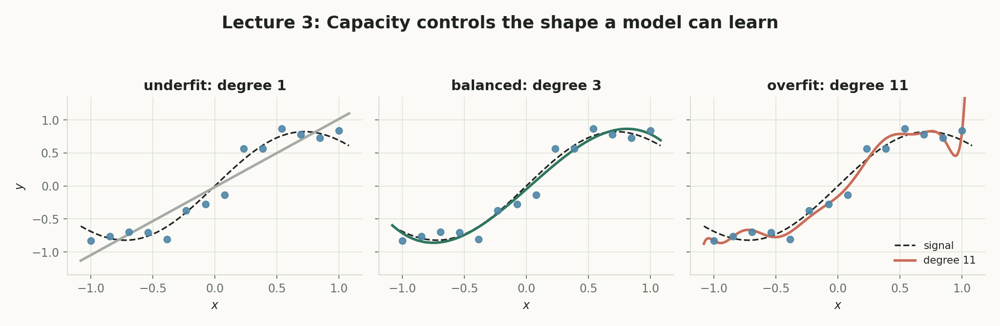
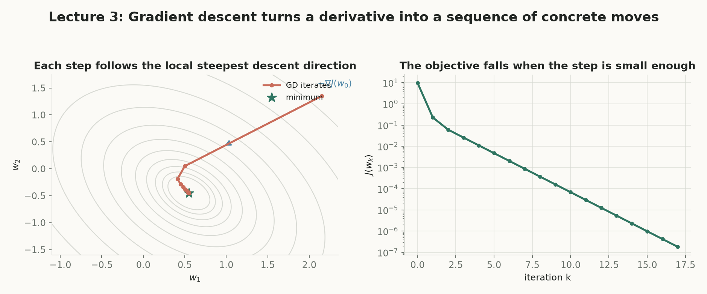

第 3 讲 · 互动附属页
Optimization I
第 2 讲给出线性回归与闭式解 $\mathbf w^\star=(X^\top X)^{-1}X^\top\mathbf y$；本讲解决它留下的两个缺口：直线拟合不了的曲线怎么办（feature map + 设计矩阵），闭式解太贵或不存在怎么办（梯度下降 + 链式法则）。第 4 讲将接着问：GD 何时收敛、多快——答案藏在 Hessian 的特征值里。
两条主线：表达与优化
前半讲“先变换，再线性”：用 $\boldsymbol\phi(\mathbf x)$ 把弯的关系摊平成参数的线性组合；后半讲“局部信息迭代”：闭式解不够时，用 $\mathbf w\leftarrow\mathbf w-\eta\nabla L$ 一步步走下山。
几乎所有机器学习模型都是这两步
固定特征 + 平方损失是最小可复现范式；logistic 回归、神经网络只是换掉损失或让特征也可学，优化接口不变。
½ 约定 · 两种向量 · 两类下标
本讲与第 4 讲一致使用 $L=\frac12(y-\hat y)^2$（样本损失带 $\frac12$）；$\boldsymbol\phi(\mathbf x)$ 是特征向量、$\mathbf w$ 是权重向量，后文还会学到表示本身；下标 $i$ 指样本、$j$ 指特征坐标。
概念地图：点击节点跳到对应小节
实线是核心路径；紫色节点属于拓展。箭头从方块边界出发，在另一方块边界结束，避免穿过节点。
核心1. 一条直线拟合不了的曲线
继续房价例子：只看面积 $x$ 时，带截距的线性模型 $f(x)=w_0+w_1x$ 假设面积每增加一平方米，预测价格总增加相同的 $w_1$。但现实的边际价值会弯曲。课件的关键方法不是抛弃线性回归，而是改变输入的表示：模型可以对原始输入非线性，同时对待学习的参数保持线性——这句话是本讲前半的核心。
是什么（严谨定义）
模型 $f(\mathbf x)=\mathbf w^\top\boldsymbol\phi(\mathbf x)=\sum_jw_j\phi_j(\mathbf x)$ 中，参数 $w_j$ 只以一次幂、线性组合的方式出现——称模型对参数线性，无论 $\phi_j$ 本身多弯。
白话理解
弯的是“坐标”，不是“权重”：$x^2$ 只是提前算好的新尺子，$w_j$ 仍然是每把尺子的放大倍数。
干嘛用
让第 2 讲的全套工具（正规方程、闭式解、平方损失几何）原样搬到曲线问题上。
怎么算 / 怎么用
检查每个 $w_j$ 是否只乘在一个“不含其他 $w$ 的量”上：$w_0+w_1x+w_2x^2$ 通过；$\sin(wx)$、$1/(1+e^{-wx})$ 不通过。
为什么重要 + 前后连接
对参数线性 ⇒ 损失对 $\mathbf w$ 是二次型 ⇒ 闭式解存在。第 2 讲 $X$ 是原始特征；本讲把它升级成 $\boldsymbol\Phi$；神经网络则连 $\boldsymbol\phi$ 也一起学（见拓展节自测题）。
从 $x$ 看它是抛物线，从 $\mathbf w$ 看它仍是线性组合——两种读法同时成立：
$$f(x)=w_0+w_1x+w_2x^2=\mathbf w^\top\boldsymbol\phi(x),\qquad \boldsymbol\phi(x)=\begin{bmatrix}1&x&x^2\end{bmatrix}^\top.$$
等式左边强调“曲线”，右边强调“参数线性”；训练要学的只是三个权重，而不是 $x^2$ 这条变换规则——规则由我们预先指定。

实验 A「特征映射游乐场」：信号是类 $\sqrt{x}$ 的弯曲曲线加小噪声（真 Math.random()）。用 多项式基函数 $\phi(x)=[1,x,\dots,x^d]^\top$ 现算最小二乘拟合（正规方程 + 高斯消元），画拟合曲线并给出训练 MSE 现算值。拖 $d$：$d=1$ 欠拟合、$d=3$ 刚好、$d=5$ 开始在点间抖动。
核心2. Feature map：先变换，再线性
设原始输入 $\mathbf x\in\mathbb R^d$。特征映射是一个预先指定的函数 $\boldsymbol\phi:\mathbb R^d\to\mathbb R^p$，把输入变成 $p$ 维特征向量。三个维度别混：$d$ 是原始输入维数，$p$ 是特征数（也是参数维数），$n$ 是样本数。再预告一次：$\boldsymbol\phi(\mathbf x)$ 是特征向量，$\mathbf w$ 是权重向量——后文两者会频繁同框。
是什么（严谨定义）
固定 $\boldsymbol\phi$ 后的函数类 $\mathcal F_{\boldsymbol\phi}=\{f_{\mathbf w}:f_{\mathbf w}(\mathbf x)=\sum_{j=1}^pw_j\phi_j(\mathbf x)=\mathbf w^\top\boldsymbol\phi(\mathbf x),\ \mathbf w\in\mathbb R^p\}$。
白话理解
给同一个输入换一组“描述坐标”：面积 $x$ 之外再添 $x^2$，弯的关系在新坐标下可以被直线/超平面表达。
干嘛用
把非线性问题翻译回线性问题：原空间需要曲线或两个阈值的关系，特征空间里可能一条直线就够。
怎么算 / 怎么用
两步分开：先查表式地算 $\boldsymbol\phi(\mathbf x)$（如 $\boldsymbol\phi(2)=[1,2,4]^\top$），再做内积 $\mathbf w^\top\boldsymbol\phi(\mathbf x)$ 得标量预测。
为什么重要 + 前后连接
本讲固定 $\boldsymbol\phi$ 只学 $\mathbf w$；能否“变容易”取决于新特征是否表达了数据真正需要的结构。每个样本都映射后堆起来，就是下一节的设计矩阵。
例：$x=2$、$\mathbf w=(1,-1,\tfrac12)^\top$ 时（逐步：先映射，再内积）：
$$\boldsymbol\phi(2)=\begin{bmatrix}1\\2\\4\end{bmatrix},\qquad f_{\mathbf w}(2)=\mathbf w^\top\boldsymbol\phi(2)=1\cdot1+(-1)\cdot2+\tfrac12\cdot4=1.$$
“线性”要分清对象：$f$ 对原始输入 $x$ 一般非线性；对特征向量 $\boldsymbol\phi(x)$ 线性；对参数 $\mathbf w$ 也线性。
实验 B「$\varphi$ 空间线性化」：红点聚在数轴两端、蓝点夹在中间——输入空间里一个阈值分不开（需要 $x>-\sqrt t$ 且 $x<\sqrt t$ 两个）。映到 $(x,x^2)$ 平面后，一条水平线 $x^2=t$ 就能分开。拖 $t$，误分数与输入空间的对应双阈值都现算。

核心3. 设计矩阵：一次矩阵乘预测所有样本
约定下标：$i$ 编号样本（$1..n$），$j$ 编号特征坐标（$1..p$）。把第 $i$ 个样本的特征向量转置后作为第 $i$ 行，堆出设计矩阵 $\boldsymbol\Phi\in\mathbb R^{n\times p}$，$\Phi_{ij}=\phi_j(\mathbf x_i)$。于是一次 $\boldsymbol\Phi\mathbf w$ 同时给出全部 $n$ 个预测。
是什么（严谨定义）
$\boldsymbol\Phi$ 的第 $i$ 行是 $\boldsymbol\phi(\mathbf x_i)^\top$；$\boldsymbol\Phi\mathbf w\in\mathbb R^n$ 的第 $i$ 个分量是 $\mathbf w^\top\boldsymbol\phi(\mathbf x_i)$。
白话理解
一张“样本 × 特征”的表：每行是一个样本的新坐标，矩阵乘相当于对每行做同一个加权求和。
干嘛用
把 $n$ 个内积压缩成一次矩阵乘；平方损失随之写成 $\frac{1}{2n}\|\mathbf y-\boldsymbol\Phi\mathbf w\|_2^2$。
怎么算 / 怎么用
逐行点乘：$\hat y_i=\sum_j\Phi_{ij}w_j$。维度自检：$(n\times p)(p\times1)=(n\times1)$；$\mathbf w\boldsymbol\Phi$ 通常维度不匹配——矩阵乘法不可随意交换。
为什么重要 + 前后连接
闭式解第 2 讲的 $X$ 直接换成 $\boldsymbol\Phi$：闭式解 $\widehat{\mathbf w}=(\boldsymbol\Phi^\top\boldsymbol\Phi)^{-1}\boldsymbol\Phi^\top\mathbf y$ 原样成立——这是“先变换，再线性”的回报。
例 5.1 精确拟合 $y=x^2$：$x\in\{-1,0,1\}$、二次特征 $\boldsymbol\phi(x)=[1,x,x^2]^\top$，则
$$\boldsymbol\Phi=\begin{bmatrix}1&-1&1\\1&0&0\\1&1&1\end{bmatrix},\quad \mathbf y=\begin{bmatrix}1\\0\\1\end{bmatrix},\quad \mathbf w=\begin{bmatrix}0\\0\\1\end{bmatrix}\ \Rightarrow\ \boldsymbol\Phi\mathbf w=\begin{bmatrix}1\\0\\1\end{bmatrix}=\mathbf y.$$
训练误差为零，对应 $f(x)=x^2$——曲线是弯的，训练仍然只在求线性参数 $\mathbf w$。下面的复算器把这张表逐行重算给你看。
实验 C「设计矩阵复算器」：step-box 逐步展示 $\boldsymbol\Phi$ 每行怎么填、$\boldsymbol\Phi\mathbf w$ 逐行点乘与残差。例 5.1 默认 $\mathbf w=(0,0,1)$ 精确命中 $\mathbf y=(1,0,1)$；练习 5.2 把滑杆调到 $(1,-1,2)$，预测应命中 $(1,2,7)$，对应 $f(x)=1-x+2x^2$。左图 $\boldsymbol\Phi$ 热力图，右图预测 vs 目标逐样本对比。

核心4. 特征越多，模型一定越好吗
多项式特征可一路加长到 $\boldsymbol\phi(x)=[1,x,\dots,x^{20}]^\top$。函数类随次数 $m$ 扩大，所以最小训练损失不会增加——但这条单调性只约束训练集。高阶曲线会在训练点之间剧烈摆动，把噪声当规律：过拟合。代价还有：$p$ 增大更贵、各列尺度差异大使 $\boldsymbol\Phi^\top\boldsymbol\Phi$ 病态、特征相关时闭式解不唯一或数值不稳。
是什么（严谨定义）
欠拟合：函数类太小，连主要结构都表达不了；过拟合：函数类过大，训练误差降而验证误差（留出数据上的误差）回升。
白话理解
$d=1$ 是僵硬的直尺，$d=11$ 是见弯就拐的软铁丝；$d=3$ 刚好抓住弯曲又不追每个点。
干嘛用
用“训练误差降、验证误差先降后升”的岔口选择次数 $d^\star$。
怎么算 / 怎么用
对每个 $d$ 现算最小二乘，分别在训练集与留出集上算 MSE，扫描 $d=1..9$ 画两条曲线。
为什么重要 + 前后连接
这是第 5 讲（泛化：训练好 ≠ 泛化好）与第 6 讲（正则化：给 $\mathbf w$ 加约束）的入口；列尺度病态还将在第 4 讲以条件数回归。

实验 D「次数扫描」：同一信号重新采样训练/留出两组点，对 $d=1..9$ 现算训练 MSE 与验证 MSE（对数轴，刻度抽稀），标出验证误差最小的 $d^\star$。说明文字随数据动态生成。
核心5. 为什么闭式解不够：一维下坡理解梯度下降
即使固定特征的平方损失有闭式解，仍需要迭代优化：$p$ 大时形成并求解 $p\times p$ 正规方程昂贵且可能数值不稳；logistic、hinge 等损失没有闭式解；神经网络对参数本身非线性，无法把 $X$ 换成 $\boldsymbol\Phi$ 了事。梯度下降提供通用接口：只要能算（或近似）$\nabla L$，就能迭代降损。方向由局部导数给出，步长由学习率 $\eta$ 决定——方向正确还不够，步长也必须合适。
是什么（严谨定义）
一维可微损失上，更新 $w_{t+1}=w_t-\eta L'(w_t)$；多维推广 $\mathbf w_{t+1}=\mathbf w_t-\eta\nabla L(\mathbf w_t)$。
白话理解
导数 $L'(w_t)$ 不是“损失有多大”，而是“$w$ 增加一点，损失大约变多少”：$L(w_t+\Delta w)\approx L(w_t)+L'(w_t)\Delta w$。正导数往左走，负导数往右走。
干嘛用
只问局部“哪边下坡”，不一次写出最优参数；每一步选方向与长度两个东西。
怎么算 / 怎么用
迭代直到停止：$\|\nabla L(\mathbf w_t)\|_2\le\varepsilon$，或 $\|\mathbf w_{t+1}-\mathbf w_t\|_2\le\varepsilon$，或 $|L(\mathbf w_{t+1})-L(\mathbf w_t)|\le\varepsilon$；并设最大迭代数 $T$ 兜底。梯度小只说明接近驻点，不自动等于全局最优。
为什么重要 + 前后连接
多维时 $-\nabla L$ 是欧氏单位球上的最陡下降方向（Cauchy–Schwarz：$\nabla L^\top\mathbf v\ge-\|\nabla L\|_2$，等号在 $\mathbf v=-\nabla L/\|\nabla L\|_2$）。$\eta$ 多大算“太大”？第 4 讲用特征值给出上界。
例 1 的逐步手算（$L(w)=w^2-4w+5=(w-2)^2+1$，$L'(w)=2w-4$，$w_0=0$，$\eta=\tfrac14$）：
$$w_1=0-\tfrac14(-4)=1,\qquad w_2=1-\tfrac14(-2)=\tfrac32,$$
逐步靠近 $w^\star=2$。而 $\eta=1$ 时乘子 $1-2\eta=-1$：参数在最优点两侧等幅横跳，恰好不收敛也不发散；$\eta>1$ 则放大误差、直接发散。
实验 E「GD 例 1 复算器」：$L(w)=w^2-4w+5$、$w_0=0$。step-box 逐步代入现算 $w_1,w_2$ 与乘子 $m=1-2\eta$；左图画抛物线与迭代点，右图画 $L(w_t)$ 随迭代变化。拖 $\eta$ 依次看：$0<\eta<\frac12$ 单调靠近；$\eta=\frac12$ 一步到位；$\frac12<\eta<1$ 翻号收缩；$\eta=1$ 等幅横跳；$\eta>1$ 发散。

核心6. 链式法则：平方损失梯度亲手推
这是本讲最值得亲手推的计算。链式法则把“参数扰动 → 预测变化 → 损失变化”拆成可相乘的局部导数。约定提醒：样本损失带 $\frac12$，$\ell_i(\mathbf w)=\frac12(y_i-\mathbf w^\top\boldsymbol\phi_i)^2$；若不带 $\frac12$，梯度多一个因子 $2$，常数可吸收进 $\eta$。
是什么（严谨定义）
记残差 $r_i(\mathbf w)=y_i-\mathbf w^\top\boldsymbol\phi_i$；外层 $\frac{\mathrm d}{\mathrm dr_i}\frac12r_i^2=r_i$，内层 $\nabla_{\mathbf w}r_i=-\boldsymbol\phi_i$，相乘即梯度。
白话理解
每个样本沿自己的特征向量“推”一次参数：误差决定推力方向与大小，特征坐标决定推力分配到哪些 $w_j$。
干嘛用
给出 GD 每一步的方向；同时把“$\nabla L=0$”重新接回正规方程。
怎么算 / 怎么用
逐分量读：$\partial\ell_i/\partial w_j=(\mathbf w^\top\boldsymbol\phi_i-y_i)\phi_{ij}$；$\phi_{ij}=0$ 的样本不直接推动 $w_j$；预测偏高且 $\phi_{ij}>0$ 时分量为正，GD 会减小 $w_j$。
为什么重要 + 前后连接
把 $n$ 个样本梯度平均，正是矩阵写法 $\frac1n\boldsymbol\Phi^\top(\boldsymbol\Phi\mathbf w-\mathbf y)$；令其为零就是正规方程——闭式解在一次性解零梯度方程，GD 在每步用局部信息逼近同一条件。反向传播就是这个想法在深层计算图上的复用。
逐步推导（单样本；每步注明所用规则）。第一步，外层平方求导：$\frac{\mathrm d}{\mathrm dr_i}\frac12r_i^2=r_i$。第二步，内层残差求梯度：$\nabla_{\mathbf w}r_i=-\boldsymbol\phi_i$。第三步，链式法则相乘：
$$\nabla_{\mathbf w}\ell_i=r_i\,\nabla_{\mathbf w}r_i=-(y_i-\mathbf w^\top\boldsymbol\phi_i)\boldsymbol\phi_i=(\mathbf w^\top\boldsymbol\phi_i-y_i)\boldsymbol\phi_i.$$
第四步，平均到全部样本并写成矩阵形（令误差向量 $\mathbf e=\boldsymbol\Phi\mathbf w-\mathbf y$，注意 $\boldsymbol\Phi^\top$ 的第 $i$ 列正是 $\boldsymbol\phi_i$）：
$$\nabla L(\mathbf w)=\frac1n\sum_{i=1}^n(\mathbf w^\top\boldsymbol\phi_i-y_i)\boldsymbol\phi_i=\frac1n\boldsymbol\Phi^\top\mathbf e=\frac1n\boldsymbol\Phi^\top(\boldsymbol\Phi\mathbf w-\mathbf y).$$
令梯度为零整理得 $\boldsymbol\Phi^\top\boldsymbol\Phi\widehat{\mathbf w}=\boldsymbol\Phi^\top\mathbf y$——正规方程再次出现。
上图把原讲义 fig5 重画为 SVG：箭头从节点边界到边界；每条边下方标该局部的链式因子（$\frac12$ 约定下 $\partial L/\partial\hat y=\hat y-y$；若损失不带 $\frac12$ 则为 $2(\hat y-y)$）。沿边把因子相乘：$\nabla_{\mathbf w}L=(\hat y-y)\,\mathbf x$。
实验 F「GD 例 2 复算器」：单样本 $x=1,y=2$，$\boldsymbol\phi=[1,1]^\top$，$\mathbf w_0=(0,0)$，默认 $\eta=\frac14$：$\nabla L=-2[1,1]^\top$、$\mathbf w_1=(\frac12,\frac12)$、$\mathbf w_2=(\frac34,\frac34)$、新预测 $\frac32$。左图在 $(w_0,w_1)$ 平面画 $L=\frac12(2-w_0-w_1)^2$ 的等高线与现算轨迹——注意最优解不唯一：$w_0+w_1=2$ 整条线。
核心7. 闭式解 vs 梯度下降，与六条误区
对固定特征平方损失，两条路通向同一个最优条件 $\nabla L=0$：闭式解一次性求解，GD 迭代逼近。按 $n$ 样本、$p$ 特征记账：
| 方法 | 一次求解 / 每步成本 | 优点 | 局限 | 何时用 |
|---|---|---|---|---|
| 闭式解 $\widehat{\mathbf w}=(\boldsymbol\Phi^\top\boldsymbol\Phi)^{-1}\boldsymbol\Phi^\top\mathbf y$ | $O(np^2+p^3)$ | 理论清楚；不用迭代、不用选 $\eta$ | 大规模昂贵；只对特殊结构存在；可能数值不稳 | $p$ 小、平方损失、要精确解 |
| 梯度下降 $\mathbf w\leftarrow\mathbf w-\frac{\eta}{n}\boldsymbol\Phi^\top(\boldsymbol\Phi\mathbf w-\mathbf y)$ | 每步 $O(np)$ | 通用；可扩展；不显式求逆 | 要选 $\eta$ 与停止条件；只有迭代近似 | $n,p$ 大、无闭式解、损失可导即可 |
六条常见误区：先自答，再点开核对
拓展8. 自测题选讲
选自讲义 §17/§18。先自己作答，再点卡片展开参考推导——答案里的每一步都对应本讲某节的现算实验。
核心收束：先变换再线性，再沿负梯度走下去
特征化模型
$$f(\mathbf x)=\mathbf w^\top\boldsymbol\phi(\mathbf x)$$
设计矩阵预测
$$\hat{\mathbf y}=\boldsymbol\Phi\mathbf w,\quad \Phi_{ij}=\phi_j(\mathbf x_i)$$
闭式解
$$\widehat{\mathbf w}=(\boldsymbol\Phi^\top\boldsymbol\Phi)^{-1}\boldsymbol\Phi^\top\mathbf y$$
梯度下降
$$\mathbf w_{t+1}=\mathbf w_t-\eta\nabla L(\mathbf w_t)$$
样本损失（½ 约定）
$$\ell_i(\mathbf w)=\tfrac12\bigl(y_i-\mathbf w^\top\boldsymbol\phi_i\bigr)^2$$
平均损失梯度
$$\nabla L=\tfrac1n\boldsymbol\Phi^\top(\boldsymbol\Phi\mathbf w-\mathbf y)$$